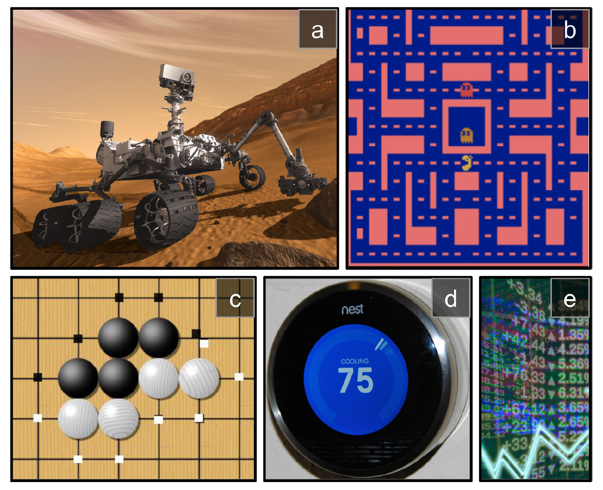

Introduction#
Note
Reinforcement Learning (RL) is one of the most exciting fields of Machine Learning
today, and also one of the oldest. It has been around since the 1950s, producing many
interesting applications over the years, particularly in games and in machine control, but seldom making the
headline news. But a revolution took place in 2013, when researchers from a British
startup called DeepMind demonstrated a system that could learn to play just about
any Atari game from scratch, eventually outperforming humans in most of them, using only raw pixels as inputs and without any prior knowledge of the rules of the games. This was the first of a series of amazing feats, culminating in March 2016
with the victory of their system AlphaGo against Lee Sedol, a legendary professional
player of the game of Go, and in May 2017 against Ke Jie, the world champion. No
program had ever come close to beating a master of this game, let alone the world
champion.
So how did DeepMind achieve all this? With hindsight it seems rather simple: they
applied the power of Deep Learning to the field of Reinforcement Learning, and it
worked beyond their wildest dreams.
Learning to Optimize Rewards#
In Reinforcement Learning, a software agent makes observations and takes actions within an environment, and in return it receives rewards. Its objective is to learn to act in a way that will maximize its expected rewards over time. You can think of positive rewards as pleasure, and negative rewards as pain. In short, the agent acts in the environment and learns by trial and error to maximize its pleasure and minimize its pain.
This is quite a broad setting, which can apply to a wide variety of tasks. Here are a few examples:
(a) The agent can be the program controlling a robot. In this case, the environment is the real world, the agent observes the environment through a set of sensors such as cameras and touch sensors, and its actions consist of sending signals to activate motors. It may be programmed to get positive rewards whenever it approaches the target destination, and negative rewards whenever it wastes time or goes in the wrong direction.
(b) The agent can be the program controlling Ms. Pac-Man. In this case, the environment is a simulation of the Atari game, the actions are the nine possible joystick positions (upper left, down, center, and so on), the observations are screenshots, and the rewards are just the game points.
(c) Similarly, the agent can be the program playing a board game such as Go.
(d) The agent does not have to control a physically (or virtually) moving thing. For example, it can be a smart thermostat, getting positive rewards whenever it is close to the target temperature and saves energy, and negative rewards when humans need to tweak the temperature, so the agent must learn to anticipate human needs.
(e) The agent can observe stock market prices and decide how much to buy or sell every second. Rewards are obviously the monetary gains and losses.

States and Observations#
A state \(s\) is a complete description of the state of the world. There is no information about the world which is hidden from the state. An observation \(o\) is a partial description of a state, which may omit information.
When the agent is able to observe the complete state of the environment, we say that the environment is fully observed. When the agent can only see a partial observation, we say that the environment is partially observed.
Note
In this course, we use the term “state” to denote both state and observation, but we will make the distinction in implementations.